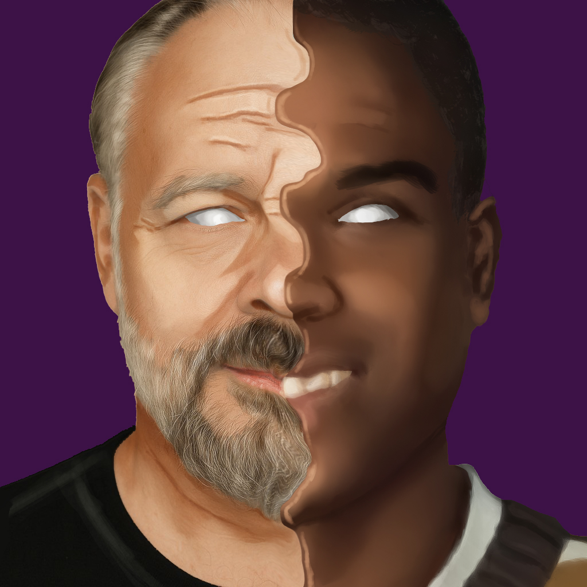

O Bebê Mágico, o Raio Rosa e o Inconsciente Coletivo:
uma jornada de autoconhecimento

À primeira vista, o episódio do “bebê mágico” da sitcom Eu, a Patroa e as Crianças e o romance místico-paranoico VALIS, de Philip K. Dick, parecem habitar universos completamente opostos. Um é pastelão familiar de fim de tarde; o outro, um mergulho vertiginoso em revelações gnósticas e realidades sobrepostas. No entanto, quando olhamos com atenção simbólica — ou com olhos junguianos — algo curioso emerge: ambos falam da mesma coisa.
O bebê mágico que desperta o saber
No episódio em questão, Michael Kyle, na tentativa de motivar seu filho Júnior a estudar e amadurecer, inventa que o neto recém-nascido é um bebê mágico. Segundo ele, quem tocar o bebê receberá uma espécie de “inteligência transferida”. O mais fascinante é que funciona. Júnior passa a se expressar com confiança, começa a vencer debates e até empata num quiz com Franklin, o menino gênio da série. Tudo isso por acreditar que o bebê havia desbloqueado seu potencial. Ou seja: o saber estava nele o tempo todo. O símbolo apenas ativou algo adormecido.
O raio rosa que revela o que sempre esteve lá Agora corte para VALIS.
Em 1974, o protagonista Horselover Fat é atingido por um feixe de luz rosa que transmite, em segundos, uma avalanche de conhecimento teológico, gnóstico e simbólico. Ele começa a escrever compulsivamente, desenvolver teorias, e passa a viver simultaneamente em duas realidades: a Califórnia dos anos 70 e Roma no primeiro século.
Assim como Júnior, Fat é tocado por uma entidade aparentemente superior.
E assim como no episódio da série, a transformação começa não pela verdade do fenômeno, mas pela crença profunda no seu impacto.
O elo invisível: o inconsciente coletivo de Jung
Para Carl Gustav Jung, todo ser humano compartilha uma camada psíquica profunda chamada inconsciente coletivo. É lá que vivem os arquétipos: símbolos e padrões universais que moldam nossa maneira de sentir, sonhar e interpretar o mundo. Eles aparecem nos mitos, nas visões, nos delírios… e, por que não, nos roteiros de sitcom. O bebê mágico é, nesse contexto, uma manifestação do arquétipo do Self nascente — o centro organizador da psique, o germe da totalidade. Já o raio rosa de VALIS é uma irrupção do numinoso, uma visitação do Self ou do Velho Sábio, vindo do fundo da psique para reordenar a consciência. Ambos os personagens — Júnior e Fat — passam por uma ativação simbólica que transforma sua visão de si mesmos. Um acessa sua inteligência reprimida; o outro, uma cosmovisão que o despedaça e reconfigura.
Comédia e misticismo: dois caminhos, uma psique
O mais curioso nisso tudo é perceber como a psique usa qualquer linguagem possível para se expressar. Ela pode surgir como um raio místico, com ecos de teologia antiga. Ou pode aparecer como um bebê numa comédia americana dos anos 2000. Em ambos os casos, o símbolo é a chave — ele não precisa ser real no mundo físico. Basta que acione o real psíquico.
O saber não vem de fora. Ele é despertado.
Tanto Júnior quanto Fat experimentam uma verdade antiga: O conhecimento não é trazido. Ele é lembrado. O símbolo, quando toca a psique no ponto certo, desbloqueia o que sempre esteve presente. No fim, não importa se foi mágica, placebo ou revelação cósmica. O importante é que, depois do contato com o símbolo, eles nunca mais foram os mesmos. Se você já teve um momento em que algo aparentemente banal — uma música, um sonho, uma conversa — te transformou de forma profunda, talvez o “bebê mágico” e o raio rosa também já tenham te tocado. Só que você ainda não percebeu.